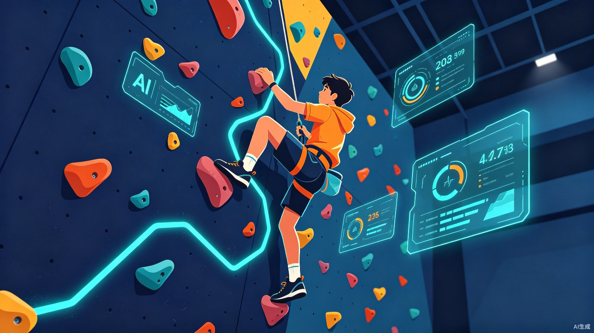
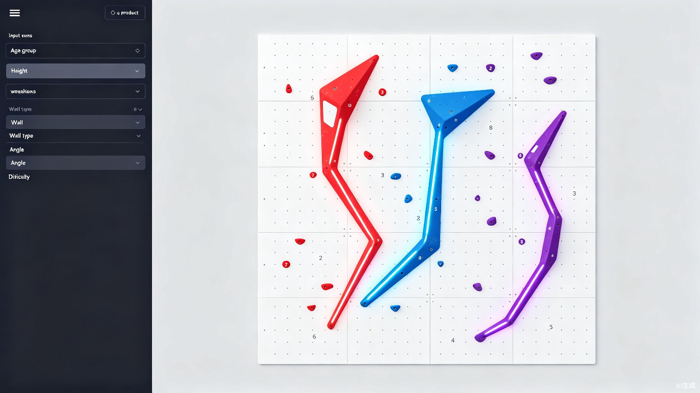
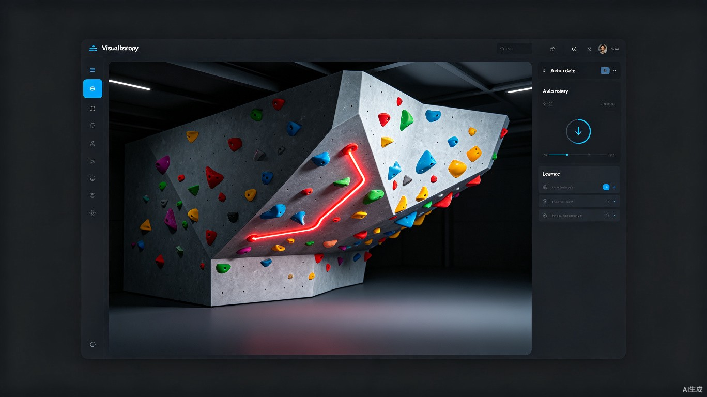
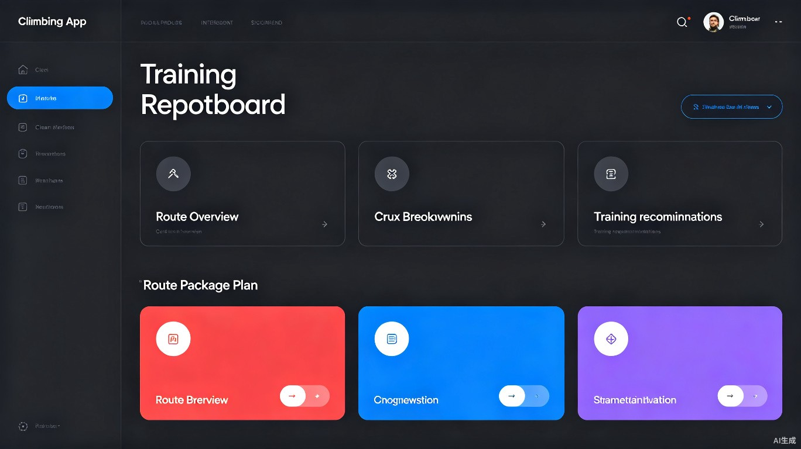

一款面向青少年攀岩训练与赛事备战的智能定线工具。基于运动员生理参数、技术短板与赛事标准，一键生成 2D 定线图、3D 环绕岩壁模型与配套训练报告。

本 Demo 是一个可直接在浏览器中运行的单页 Web 应用原型，核心目标是把「青少年攀岩定线」从经验驱动变成数据 + AI 驱动。
输入年龄组、身高臂展、技术短板、岩壁角度与目标难度后，算法自动规划三段式线路（起步 / 核心 / 顶点），并输出带序号手点、脚点与难点标注的平面定线图。
基于 Three.js 实时渲染真实比例的岩点（大点、小抠点、捏点、反抠点等），支持 360° 自动环绕查看，让教练和运动员直观理解线路空间结构。
自动拆解难点动作、给出周期化训练建议，并支持「3 条梯度套餐」模式（入门 → 进阶 → 竞技），满足青少年系统训练需求。



从真实训练场景出发，用 AI 解决青少年攀岩定线「难量化、难个性化、难系统化」的问题。
青少年攀岩在国内快速发展，但定线长期依赖教练个人经验。同一批孩子年龄、身高、力量差异大，传统「一套线路所有人爬」的方式容易造成：
这让我们想到：如果把定线规则、人体工学限制和赛事风格模板交给 AI，是否能让每一条线路都「为孩子量身定制」？
产品试图回答的核心问题
"如何为不同身体条件、不同技术弱点的青少年，快速生成安全、科学、符合赛事风格的训练线路？"
1. 个性化缺失
现有定线工具多为通用成人模板，未考虑青少年臂展、身高、最大跨距等限制。
2. 训练闭环断裂
定线、教学、课后训练三者分离，运动员不清楚这条线到底在练什么。
3. 线路多样性不足
手动定线容易陷入固定模式，孩子长期爬「同一种弯弯曲曲的线」，进步缓慢。
核心解决路径
市场与政策双驱动：攀岩已纳入奥运会与全运会项目，青少年培训市场增速快，但智能化工具稀缺。
技术可行性高：定线本质是「约束优化问题」——人体工学约束、岩壁几何约束、风格约束，非常适合用算法建模。
社会价值明确：科学的青少年定线能降低运动损伤风险，帮助教练提升备课效率，让孩子在安全的前提下持续获得成就感。
产品形态定位
不做硬件，不替代教练，而是成为：
青少年攀岩教练的 AI 定线助手